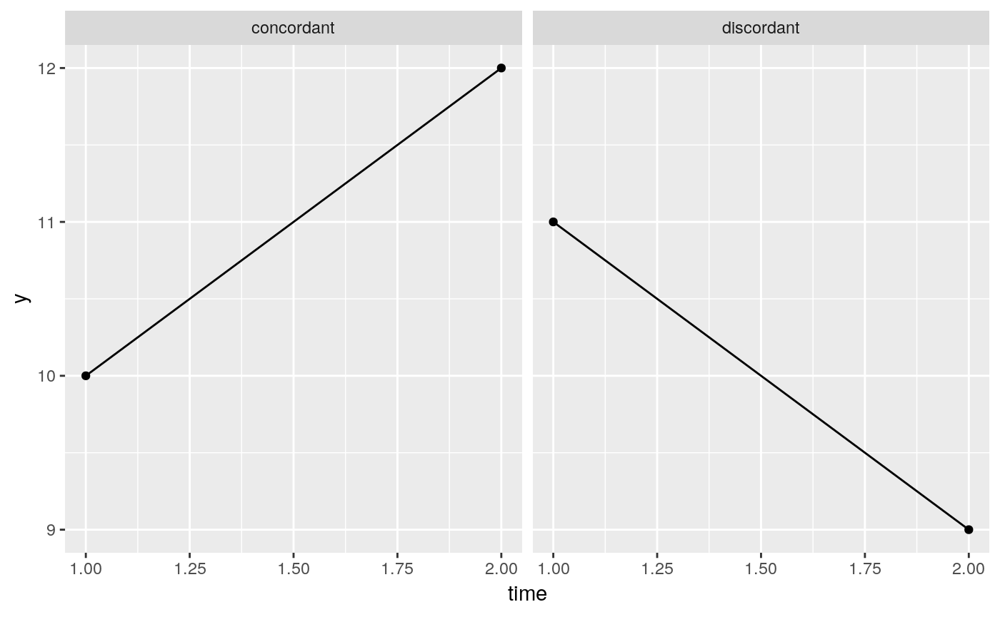
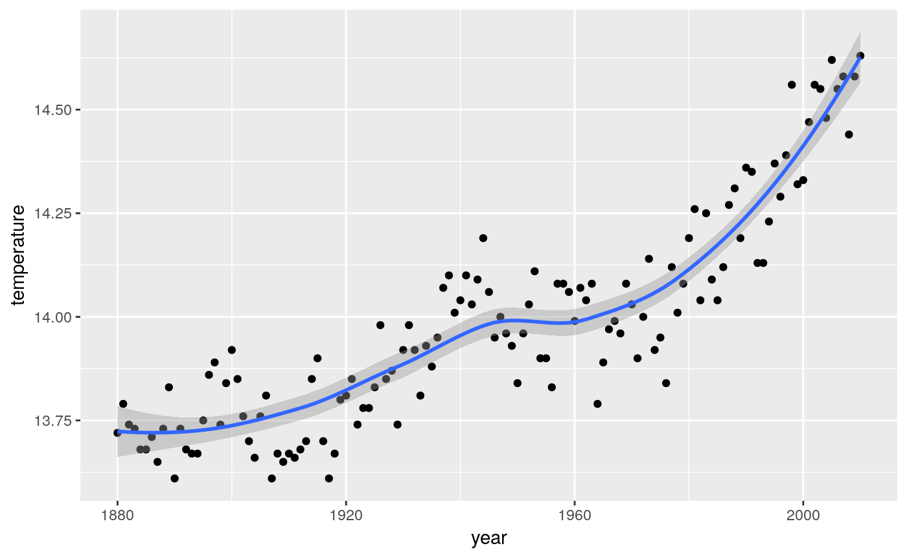

You can install the released version of mkac from Github with:
library(tidyverse)
#> ── Attaching packages ────────────────────────────────────────────────────────────────────────────────────────────── tidyverse 1.2.1 ──
#> ✔ ggplot2 3.1.1 ✔ purrr 0.3.2
#> ✔ tibble 2.1.1 ✔ dplyr 0.8.0.1
#> ✔ tidyr 0.8.3.9000 ✔ stringr 1.4.0
#> ✔ readr 1.3.1 ✔ forcats 0.3.0
#> ── Conflicts ───────────────────────────────────────────────────────────────────────────────────────────────── tidyverse_conflicts() ──
#> ✖ dplyr::filter() masks stats::filter()
#> ✖ dplyr::lag() masks stats::lag()
library(mkac)This package facilitates the investigation of two basic problems in the analysis of data collected over time:
The first question is attacked using the Mann-Kendall correlation, which is the Kendall correlation where the \(x\)-variable is time. This is a non-parametric correlation that does not assume linearity and is not damaged by outliers. See this Wikipedia page for details. It will thus detect non-linear but monotonic trends.
The Mann-Kendall correlation is based on the idea of “concordant” and “discordant” pairs. Suppose the variable measured over time is called y, and consider two values of y measured at different time points:
The names reflect whether or not the pair of observations is in the same order as time; a concordant pair shows an “uphill” trend, and a discordant pair a “downhill” trend:

The Mann-Kendall correlation is then obtained by considering all possible pairs of observations, and counting up the total number of concordant and discordant ones. The difference concordant minus discordant is then scaled to lie between -1 and 1. There are n(n-1)/2 pairs of observations, and an outlier only contributes only n-1 concordances or discordances to the total, no matter how much of an outlier it is, so outliers can have only limited influence on the Mann-Kendall correlation.
If the values of y are independent, there is standard theory that enables us to test the null hypothesis that the Mann-Kendall correlation is zero. However, data that are collected over time are often autocorrelated. Hamed and Rao obtain an approximation to the P-value of the Mann-Kendall test that applies when the observations are autocorrelated. The common case is of positive autocorrelation (when one value of y is high, the next value is more likely also to be high); the P-value for independent data is then too low and thus overstates the significance of the time trend. The Hamed-Rao adjustment is implemented in this package.
Consider world mean temperatures by year:
my_url="http://www.utsc.utoronto.ca/~butler/d29/temperature.csv"
temp=read_csv(my_url)
#> Warning: Missing column names filled in: 'X1' [1]
#> Parsed with column specification:
#> cols(
#> X1 = col_double(),
#> Year = col_date(format = ""),
#> temperature = col_double(),
#> year = col_double()
#> )
temp
#> # A tibble: 131 x 4
#> X1 Year temperature year
#> <dbl> <date> <dbl> <dbl>
#> 1 1 1880-12-31 13.7 1880
#> 2 2 1881-12-31 13.8 1881
#> 3 3 1882-12-31 13.7 1882
#> 4 4 1883-12-31 13.7 1883
#> 5 5 1884-12-31 13.7 1884
#> 6 6 1885-12-31 13.7 1885
#> 7 7 1886-12-31 13.7 1886
#> 8 8 1887-12-31 13.6 1887
#> 9 9 1888-12-31 13.7 1888
#> 10 10 1889-12-31 13.8 1889
#> # … with 121 more rows
ggplot(temp, aes(x=year, y=temperature)) + geom_point() + geom_smooth()
#> `geom_smooth()` using method = 'loess' and formula 'y ~ x'
This appears to show an upward trend, but with a lot of variability. Is that statistically significant?
kendall_Z_adjusted(temp$temperature)
#> $z
#> [1] 11.77267
#>
#> $z_star
#> [1] 4.475666
#>
#> $ratio
#> [1] 6.918858
#>
#> $P_value
#> [1] 0
#>
#> $P_value_adj
#> [1] 7.617357e-06This says, for testing that the Mann-Kendall correlation is zero:
Because the temperatures are positively autocorrelated, the trend is strongly significant, but not as significant as it would be if the temperatures had been independent. I recommend using the adjusted P-value, but also looking at the effective sample size to see whether adjusting for autocorrelation actually made any difference.
Having found a significant trend, the next question is “how big is it”? This can be answered by looking at the Theil-Sen slope. This assumes linearity (which should be checked for reasonableness), but is not affected by outliers.
The pairwise slope between two observations is the difference in their values of y divided by the difference in time between them. Each pair of points has a pairwise slope, and the Theil-Sen slope is the median of all possible pairwise slopes. Thus an outlier observation has no influence on the Theil-Sen slope (it can affect n-1 of the n(n-1)/2 pairwise slopes, but even if it does, it will not affect the median of them at all).
The world mean temperatures do not have a linear trend, but the Theil-Sen slope will give us some kind of average rate of change:
The trend appears to be approximately linear up to about 1970, and approximately linear after that, but with a steeper trend. We might calculate and compare two separate Theil-Sen slopes, thus:
temp %>% mutate(time_period=ifelse(year<=1970, "pre-1970", "post-1970")) %>%
nest(-time_period) %>%
mutate(theil_sen=map_dbl(data, ~theil_sen_slope(.$temperature)))
#> # A tibble: 2 x 3
#> time_period data theil_sen
#> <chr> <list> <dbl>
#> 1 pre-1970 <tibble [91 × 4]> 0.00429
#> 2 post-1970 <tibble [40 × 4]> 0.0168Theil-Sen slope is very nearly four times as big since 1970 vs. before, and even then, appears to be increasing with time.